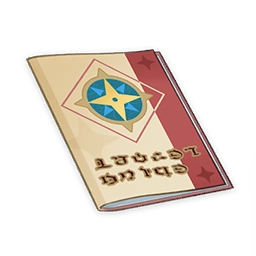

Teyvat Travel Guide¶

Author: Alice
Mondstadt Chapter¶
Note
A magazine by the Adventurers' Guild. Each issue introduces great sceneries across Teyvat. This issue includes a short traveling diary of Alice the Traveler on her experiences in Mondstadt.
Teyvat Geographic Special Edition — Alice's Mondstadt Diaries
Dadaupa Gorge¶
The three hilichurl tribes located in this valley are all densely populated. What if we built a huge spinning, ball-shaped cell in the center of the valley and threw all of the hilichurls into it? That way we might be able to generate enough energy to power all the mills in Mondstadt for at least five years. If we took it one step further by grinding the hilichurls that are too old or too weak into food and feeding them to the strong ones, we might just build ourselves a perpetual motion machine that can support a huge factory like in Snezhnaya!
It seems totally feasible to me.
But when I told Miss Lisa about this idea, she just looked at me and pondered in silence for a long time, then changed the subject gracefully.
Starsnatch Cliff¶
The Anemo Archon is a bit too undisciplined for me. If I were a god, I would not have allowed my realm to look so unorganized and ragged. With enough bombs placed in proper positions, even huge cliffs like Starsnatch would crumble into dust in a second. With flatter terrain, Mondstadt would surely look much nicer.
But that unctuous Cavalry Captain rejected my proposal instantly. He even asked me to stay away from Starsnatch Cliff.
Windrise¶
Windrise is the only area in Mondstadt that has a relatively flat terrain. At the center there is a huge oak tree. It is said that Vennessa ascended there. I searched around the tree for a long time but did not find any launching device.
I grabbed some hilichurls nearby to put my theory to the test. Sadly, the longest flying distance was from here to the hunters' huts around Springvale. How disappointing.
Falcon Coast¶
My unsuccessful experiment caused quite a stir in Springvale, so Miss Jean from the Knights of Favonius arranged someone to keep tabs on me. All I could do all day was wander around at Falcon Coast. This is such a boring place. Those stupid eagles hovering in the sky and puffed-up Anemo Slimes all bored me to death! The worst of all was that I had nothing to do!
On the other hand, the Outrider girl who was sent to monitor me had quite a lot of fun with the kids.
Whispering Woods¶
Yet another forest in Mondstadt. This Outrider named Amber seemed to know her way around this place. The explosive toy she carried around caught my attention. With some tweaks, I could turn it into something that could blow this forest and even the nearby mountains into smithereens easily.
My proposal seemed to scare her. But an explosive stuffed toy is indeed a brilliant idea.
I must try it out next time.
Brightcrown Canyon¶
I finally got rid of that stalker from the Knights of Favonius. This valley I found at the northwest coast of Cider Lake is still guarded by ancient mechanisms, but the soldiers responsible for holding the pass for the King of Gales were nowhere to be found now. All the winds of time had left behind were the unintelligent hilichurls and silent mechanical guards.
My attempt to control Ruin Guards with hilichurls failed as well. The guard split into pieces, and as for the fate of the hilichurl strapped onto it... I will spare you the gory details. Half of the ruins were also destroyed in the process.
Stormterror's Lair¶
Brightcrown Canyon leads to this huge ruin of an ancient city which was built by the cruel King of Gales, Decarabian. The city was built in a ring shape. It seems that every resident of the city had been arranged their own spot between the inner and outer rings. Right in the center of the city was the tall tower where the King of Gales resided.
The ruins of the domain of this cruel king, who once tried to control his people's lives, are now utterly deserted.
I blew up a few arcades so people can climb up the tower more easily. Looks quite good to me. The ruin feels more ancient now.
Liyue Chapter¶
Note
A magazine by the Adventurers' Guild. Each issue introduces great sceneries across Teyvat. This issue includes a short traveling diary of Alice the Traveler in Liyue.
Teyvat Geographic Special Edition - Alice's Travels in Liyue
Dihua Marsh¶
The northern stretch of the Bishui River turns into a wetland. If you look south beyond the Stone Gate you will see a Silvergrass marsh as far as the eye can see. At the southernmost point of the marsh is an inn perched atop a giant rock. That is the Wangshu Inn, the highest point on the entire marsh. Look south from there and you will see the Guili Plains. You can also make out the Guyun Stone Forest across the sea. Also — there's a weirdo staying at the inn on the top floor. I don't think I've ever heard him say a single word.
Lunch is a true feast at the Wangshu Inn. The kitchen is equipped with every utensil you could imagine — perfect for getting some practical alchemy experience.
On the topic of alchemy practice, I've got a few new things to test out in my search for an explosion catalyst. If everything goes smoothly, I'll spend a few more days here then head to the Guili Plains.
Guili Plains¶
In the end, I came to the Guili Plains a few days earlier than I'd originally planned.
Records suggest that prior to the Archon War, this area was a thriving marketplace.
The foxes and wild finches are stunning here, with fur and feathers that have a certain glow about them. But I hear that they can be pests, too. Liyue locals complain that they keep eating their fruit offerings to the Geo Archon. I wonder if that gives them a fruity aroma when roasted? Maybe I should go hunting.
They run a strict operation at the checkpoint on the main road, but the guards who work there are friendly people. I made a potion from some local herbs and gave it to one of them for his stutter — it cured him, but it did have some minor side effects. He now can't help but constantly imitate everyone he comes across. Not just what they say, but the way they say it. It's uncanny how spot-on his impressions are.
Jueyun Karst¶
I'm told that somewhere amidst the misty peaks of Jueyun Karst lives an adeptus, the exact location hidden somewhere in the ocean of cloud. All the Liyue herb gatherers claim to have seen the realm of the adepti in all its glory revealed before their very eyes in the clouds. Based on personal experience, I can say that over-indulging on certain types of mushrooms can induce visions of a similar nature.
The terrain here fascinates me. So many of these Stone Pillars look like they belong deep underground, not here on top of a mountain. There is supposed to be an underground reservoir here. Part of me wonders if all the water was drawn out, perhaps Jueyun Karst would find itself back on the ocean floor where it belongs.
My travel companion Zhongli is the sternest person I know, but he seems most entertained by this theory. He won't stop laughing.
What an odd fellow.
Yaoguang Shoal¶
I've heard that the fog often rolls in off the sea onto Yaoguang Shoal, and when it's at its thickest you can barely see your hand at the end of your outstretched arm. Unfortunately, I didn't make it here in time to see a foggy episode. It's a bit of a shame.
There are so many lovely shells on the beach. I wonder how many of them have been there since the Archon War? I strung some of them together to make a necklace, but unfortunately that fisherman from the inn sat on it and broke it... Every last shell, brutally crushed beneath his merciless buttocks. None were spared.
Not only that, but because he injured himself on the shards of broken shell, I had to pay his medical bills.
A giant conch shell stands on the beach where the Bishui River enters the sea. A kind old lady lives inside. Her family is said to have sailed here on the giant shell, and she spends her time rescuing shipwrecked people who end up drifting near the shore. I think that repurposing the giant shell as a self-propelled boat would make it much easier for her to rescue people from the sea.
But after I lost control of my third prototype seashell-boat and it blew up, the kind old lady decided she was not going to rescue me from the sea anymore.
Guyun Stone Forest¶
This is the site where the Geo Archon defeated the sea monster. Some of the great stone spears that pierce the ocean floor still tower above the surface of the sea, though many snapped long ago. The hexagonal Stone Pillars, formed from a conglomeration of Geo energy, are quite intriguing to look at. Viewed from above, one gets the impression that they were deliberately arranged in their current form to make a specific shape on the ocean surface. Maybe that was the real reason the Geo Archon rained down destruction on the ocean floor with his stone spears? Maybe it was all just a big joke, albeit in extremely poor taste?
Zhongli from Liyue Harbor seems extremely knowledgeable on Liyue folklore, but I've never actually seen him come here. I can see the Wangshu Inn in the distance. I'll bet that weirdo I met there last time is still staring this way now.
The flow of the ley lines around here is unique in all of Liyue. Much more dynamic, somewhat unstable... It's as if a great, relentless power stirs somewhere in the depths of the ocean. Perhaps it is the defeated sea monster, still writhing on the ocean floor.
Inazuma Chapter¶
Note
A magazine by the Adventurers' Guild. Each issue introduces great sceneries across Teyvat. This issue includes a short traveling diary of Alice the Traveler in Inazuma.
Teyvat Geographic Special Edition — Alice's Inazuma Diaries
Mt. Yougou¶
Lush sakura trees grow all over this mountain on the northern end of Narukami Island. These sakura all share roots with the largest of them, the Sacred Sakura, which sits on the mountain's summit.
The Grand Narukami Shrine, greatest of the Inazuman shrines, is dedicated to this Sacred Sakura.
Little Yae has been the one managing the shrine in recent years. Ah, how she's grown! It's just a shame, really, to think that I can never again make her cry as easily as I used to.
Really, I'd thought that she'd quickly get drunk, start to cry, and start talking all silly, but she drank me under the table instead... I made a fool of myself in the process and was quite thoroughly mocked for it. Getting made out to be some old woman who got what was coming to her... Bah.
...And here I was looking to tease that little girl a bit more, too.
Inazuma City¶
I brought a new firework formula to that Naganohara kid's place. But when he heard me talking about a new medicine that might cure his deafness, he demurred and did not accept it.
This kid is ever the conservative about explosives, always diluting them to the point where they cannot cause any obvious physical changes to the environment, and always relying on the combustion of different metals to produce monotonous visual effects.
And he only does tests inside his workshop! I mean, come on, where's the fun in that?
Ah, such a waste, such a waste!
Now as for his daughter, Yoimiya, she's an interesting young lady. We collected a lot of sweets during the festival and tried all kinds of new formulae out. That was so much fun!
...And then we got packed off to a deserted beach by the fire brigade. Something about new rules with which to keep the peace in Inazuma City, or something similarly silly.
We discussed a lot of new ideas, and she even gave me some constructive feedback. A talented kid, this one is. If the paradise I made for Klee also had one of Yoimiya's fireworks performances, that would have been perfect!
It's just a shame that that grumpy general kept too close an eye on us — or else I'd have helped Yoimiya improve some of her gadgets, or even spirited her away.
This reminds me of the time, not long ago, when I was preparing a medicine that would allow for flight in the Imperial Kitchen. It blew up due to a mistake of mine, injuring a young tengu warrior to the point where her left wing would have needed, say, half a month to recover. I had wanted to help her patch the wound up, but it seems as if she's been avoiding me ever since...
Well, I left her some medicine all the same, just to see how its effects would turn out.
After that incident, it seems that person who spends all her time holed up in Tenshukaku has sent some soldiers specifically to watch my every move. I mean, that's a bit much.
I even apologized right to her face, but she just won't let up.
She was the one who'd allowed me to conduct experiments in the Imperial Kitchen in the first place, you know?
Also, Ms. Kamisato declined my idol group invitation for the sixth time running. Ah, what a disappointment.
Tatarasuna¶
Tatarasuna is an island chain that is naturally shaped like a ring. The mountains rise to overlook the sea, surrounding the large blast furnace in the middle. This is where Inazuman Jade Steel is produced and endlessly made into the best weaponry for the highfalutin bigwigs of Inazuma — ore made from the blood and bones of a defeated god.
This place is the Tenryou Commissioner's pride and joy, and as such, he takes extra good care of the workers and technical specialists.
I was accompanied during my time at Tatarasuna by a lady named Kagami Gozen. She seems to be a leader amongst the workers there, and has an official Shogunate post. Even though she's the Tenryou Commissioner's subordinate, she very much looks like his equal in front of the workers.
All of them trust and love her. I'd daresay that their respect for her dispatches might be even greater than what they give the Shogun... But Kagami Gozen herself frowns often. Very unfriendly-looking.
The Tatarasuna workers are largely rootless, washed up on these shores by the waves of history. Their many tattoos and working songs set them apart, but also strengthen their mutual bonds.
Like the other workers at Tatarasuna, Kagami Gozen's body has scars from high-temperature burns from Tatarigami. These may be signs of short-lived or ill people in the eyes of outsiders, but here, it is how they identify family.
I took the liberty of modifying the Mikage Furnace, throwing a few valves and panels into the sea and improving the containment dome, which back then could, at best, be rated "better than nothing." I wonder if those engineers from Fontaine will be pleasantly surprised?
Old man Kujou might get a little upset from production going down, but at least the furnace isn't going to go haywire from overheating, and I believe that even in the event of a war, which may soon come, the explosion should not be too large.
"Large" according to my personal standards, of course.
Hmm, actually, might my ingenious interventions perhaps prevent war from breaking out at all?
Well, I for one would be more than pleased to see the expressions on those astrologers' faces when their predictions come to naught! Hah!
Yashiori Island¶
Ah, the clear blue skies over Yashiori Island really are a pleasant sight.
Those stodgy onmyouji explained that the Raiden Shogun placed many "wards" over this place to prevent the corruption that seeps from the remnants of the serpent god... or something like that. I'm not good with their religious jargon.
As far as I can observe, those lamp posts are quite interesting. Although they have the appearance of items dedicated to the Electro Archon, the techniques used to make them are quite familiar to me.
Oh, whoa, would you look at that! This is supposed to be a travelogue, not some tedious academic paper!
We were warmly welcomed by Washizu, the head of Higi Village. The grilled fish and onigiri were great!
Also, that place they call Nazuchi Beach is full of friendly pirates... Ah, it's just a shame that I couldn't stay on this island for longer.
The mines on the island are busy places indeed, but the equipment they use there is quite backward. Even though the Shogun put all those wards down, blocking off most of the Tatarigami's spread, many miners have still contracted chronic illnesses from prolonged exposure to the influence of those snake-bone crystals.
The Sakura Mochi that the onmyouji brought with them are very tasty, but they're hardly the equal of the beauties that Little Yae makes.
I should probably pay a visit to Asase Shrine later. I wonder how that fat cat's been doing lately... I did try to catch it with a specially-crafted cage the other time, only to be stopped by that killjoy shrine maiden.